MANIPULATIVE CANVAS
Thesis by A. Sukhorukova
Abstract
How do the known conventions of image-composition influence our perception of the surrounding reality?
This writing is about the social power of a two-dimensional canvas.
We live in the world, ruled by images. A man-made image is a language, that emerges within a specific culture. It always follows a certain structure and intention, and lacks the possibility of being entirely objective or autonomous. A graphic image is the way we put the tangible world in order, as well as give a shape to abstract ideas. I believe, that this language can and should be studied, taught and used thoughtfully.
In this thesis, my main objective is to take a step back, and look at what we already have and might be currently taking for granted. My main research focus is on some of the existing conventions of a graphic composition, that travel from image to image, and influence our perception of the surrounding reality. I speculate and provide examples of how basic graphic elements like line and circle become cultural weapons.
But, as this theme is extremely wide in its aspects, I have to keep it sharp. To not get lost in the overwhelming historical research, I choose one subject to illustrate the general standpoint. I'm looking into the diverging graphic representations of time, as a clear example of how a drawing can form a shared philosophical attitude.
Apart from that, my writing is partly autobiographical. Images have always been a big part of my life, and everything I write I, first and foremost, project on myself. I try to analyze my own relationship with images, and look at my background in order to understand these dynamics and see what I can learn from it.
After-all, this thesis is not, yet, a plan of action, but a proposal to raise more strategic questions:
What is the future of visual-literacy?
What is the duty of image-makers in the world filled with misinterpreted and undervalued images?
Part 1:
Habit as a tool.
The language we own.
Language, according to Webster dictionary, is “a formal system of signs and symbols (such as FORTRAN or a calculus in logic) including rules for the formation and transformation of admissible expressions”.1
Merriam-webster.com. (2017). Definition of LANGUAGE. [online] Available at: https://www.merriam-webster.com/dictionary/language [Accessed 1 Aug. 2017].
I picked graphic design to be my profession, because I am interested in language and all its states and forms, – language in action, constantly evolving, succeeding or failing to work, or a language that might not even exist yet.
One thing I keep choosing as a standpoint in my work is that language is a man-made system. No matter how instinctively it might seem to emerge, this system is an initiated creation within a context. It has no meaning outside of the realm where it is applied for communication. I believe, that language is also a method that goes beyond text and spoken word, and implies any sign arrangements accepted and used in a community.
Once it is practiced on a regular basis, a system becomes a cultural feature. Language is made to be used, and a fluent usage requires human maintenance. Existing within an environment that acknowledges its powers, language spreads around, filling all places it can fill, it adapts and grows on the way. Eventually, it starts shaping that environment, taking control over information exchange on different levels. In the end, it is easy to start treating language as an autonomous entity, practically a living organism. That shift of perception might happen once a system is applied frequently, and all of a sudden acquires a new status: it becomes a habit.2
"Learning to read and write tends to happen so early in formal education, if not before, that humans have little conscious experience of pre-literacy, leaving text almost invisible as a technology. As a consequence our awareness and understanding of the formative role of text rather than ‘the media’(usually confined to film, radio, television, and journalism) in human culture remains surprisingly rudimentary."
Weel, A. (2016). Changing our textual minds. Manchester: Manchester University Press, p.3.
I write this thesis in a language other than my mother tongue. I can still recall English being that strange distant system, and how I had to force myself to replace Russian words with other, alien ones. After some time has passed, it became easier. After years of practice, I came to a point where, all of a sudden, I didn't have to translate anymore, I could just speak English. Two systems broke apart. Once English became a self-sufficient habit, I no longer had to think about what it is made of. I could finally focus on what I had to say.
But can it ever be exclusively about the content? English is different from Russian not just in sounds, alphabet or quantity of words. It has a different tone, different systems of accents, it comes with different expectations of what’s to be said. I remain myself, but the self is extended. Two operating systems are installed. There are just things that either of them can be good and bad for. There are expressions that only exist in one of the languages. English has created one more reality for me to live in.
Apart from the words themselves, there is always what is not verbalized but implied. A successful communication comes with a different protocol of reading intentions. That, in my perspective, is one of the key points of transitioning from being an alien to becoming a part of a certain social group. A few years ago I came across some fascinating material, while researching the phenomenon of human mimicry. It was a study of the relatively recent scientific discovery called mirror neurons,3 – the part of a human brain associated with intention-reading. “Studies suggested that humans have a mechanism for copying mental notes of different behaviors, which partly explains how we learn to smile, talk, walk, dance or play tennis. This means that we mentally rehearse or imitate every action observed, whether a somersault or [40,41] a subtle smile, indicating that these cells are used to learn everything from the first basic steps to more graceful accurate movements. Therefore, imitation is involved in learning through the transformation of visual inputs encoded into action by the observer [18].”4 If a habit itself isn’t a skill per se, a skill is an intentionally developed habit that starts with (visual) observation and strive for awareness.
Ramachandran, V. (2017). The neurons that shaped civilization. [online] Ted.com. Available at: https://www.ted.com/talks/vs_ramachandran_the_neurons_that_shaped_civilization [Accessed 15 Aug. 2017].
Carvalho, D., Teixeira, S., Lucas, M., Yuan, T., Chaves, F., Peressutti, C., Machado, S., Bittencourt, J., Menéndez-González, M., Nardi, A., Velasques, B., Cagy, M., Piedade, R., Ribeiro, P. and Arias-Carrión, O. (2013). The mirror neuron system in post-stroke rehabilitation. International Archives of Medicine, [online] 6(1), p.41. Available at: https://www.ncbi.nlm.nih.gov/pmc/articles/PMC4016580/ [Accessed 18 Oct. 2016].
My general intention here is, first of all, taking a step back and turning to an unbiased observation. I want to look at, and try to de-construct those implicit habits that nowadays regulate communication in different parts of the world. From here on, I am going to leave linguistics to linguists, and focus on the language of my own occupation: image. In my perspective, the current state of the relationship between image-makers, images, and their spectators, is in need of critical reconsideration. I believe that there are tools of visual articulation that are currently taken for granted.
Thoughtless visual thinking
“For one to whom the real world becomes real images, mere images are transformed into real beings tangible figments which are the efficient motor of trancelike behavior.” 5
– Guy Debord, Society of the Spectacle
Cddc.vt.edu. (2017). Situationist International Online. [online] Available at: http://www.cddc.vt.edu/sionline/si/perfected.html [Accessed 9 Aug. 2017].
“Visual thinker” is an expression that is commonly used to define certain natural capacities of one’s mind to adopt abstract concepts. I would like to suggest that apart from the dogmatic theory, that people have different propensities for social adaptation, visual thinking is as much an inherited thinking method, credible to be taught and amplified.
"What, precisely, is (visual) ’thinking'? When, on the reception of sense impressions, memory pictures emerge, this is not yet 'thinking.' And when such pictures form sequences, each member of which calls forth another, this too is not yet 'thinking.' When, however, a certain picture turns up in many such sequences, then—precisely by such return—it becomes an organizing element for such sequences, in that it connects sequences in themselves unrelated to each other. Such an element becomes a tool, a concept. I think that the transition from free association or 'dreaming' to thinking is characterized by the more or less prominent role played by the 'concept'" (Einstein 1979, 7).6
Psychology Today. (2017). A New Look at Visual Thinking. [online] Available at: https://www.psychologytoday.com/blog/rethinking-thought/201602/new-look-visual-thinking [Accessed 12 Aug. 2017].
Am I a visual thinker?
“Oh that’s nice, what is it?”
Practicing different ways of visual self-expression pretty much throughout my entire conscious life, I couldn’t possibly escape being taken as a representative of that “visual thinkers” gang. I was encouraged to work with image as long as I remember. I mean, I would get crayons for my birthday. Go to the painting/drawing classes. Be taught many many things about how to project and transfer objects on a flat canvas. My visual sensitivity was growing as far, as it served for image becoming an output, and the input to support those activities was mainly learning about those other people creating images and known for it. As a consequence, I was often around other drawing and painting kids, in this little artificial community initiated by the third party (parents) and guided by the course teachers, who’s ultimate goal would be to show us how to create an image that would be somewhat enjoyable for the spectator (parents). Visualizing things on paper in that context has become an end in itself. I knew, that my drawing was valuable, if somebody liked it after it is done.
“Draw something nice for your grandma, she’s gonna like that!”
I also knew, that, as an artist, I am supposed to fall under a sort of affective state while drawing – that’s what’s in it for me. This idea of an "affect" from the glorious was haunting me, as it sounded like that thing you have to have, if you know what you are doing. I was often exposed to the things that were supposed to be “outstanding” 7, and those other things, that were only trying to be so, but were actually rather “mediocre” or even “bad”8. I knew that people know when they hear amazing music, or see an amazing painting, but I had no idea. I just could not detect that intangible value, unless someone I looked up to would point at it. So, I was faking it while trying to figure it out. I did get the joy from the process, but that was different: I had to be proud of what I was drawing. And I was, mostly because I felt my hand being more capable of drawing a straight line, and because of my line being straighter than some other lines I saw around. Of course, somewhere in the core there was more to it, but at a certain point this strive for aesthetic perfection has pretty much become the essence of my relationship with own “creativity”. The curriculum of the art school I went to was solely based on the idea of evolution due to constant practice, aka repetition, and “better-faster-stronger” was the ruling principle. With all the encouragement I got to keep on drawing, I eventually started facing the same existential-creative crisis as most other kids, who were sitting next to me:
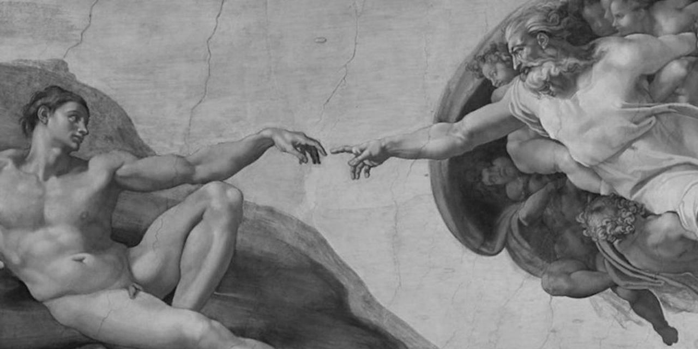
'Adam's Creation Sistine Chapel ceiling' by Michelangelo
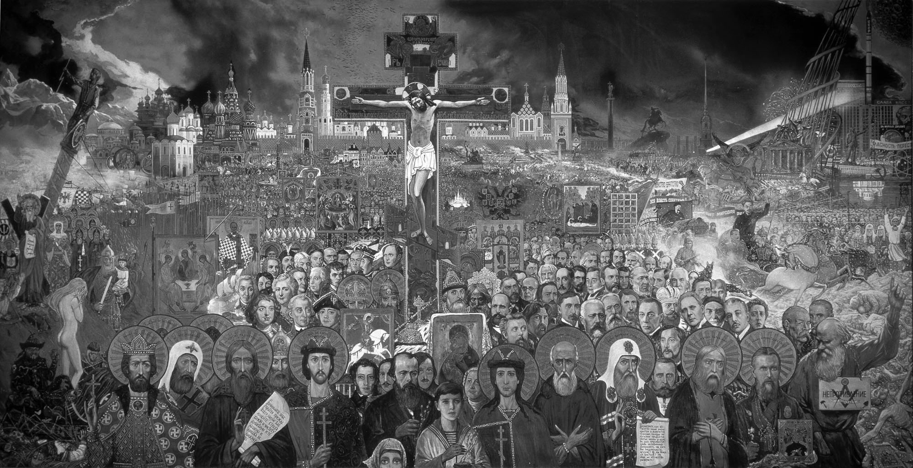
Ilya Glazunov. Eternal Russia. 1988
“I don’t know what to draw. I already drew a plant last week.”
I want to make myself clear: I do think I was a lucky child, and the appreciation only keeps growing as I go further from my background in what I can afford doing now. However, the point is: with all the attention I gave perfecting the quality of my drawing, I disqualified it as an instrument that would get me anywhere beyond that. The images I would create had no meaning if they didn’t show how good I am at making them. Their aesthetic value defined my own value as the author. It has always been an exclusively social process of self-establishment, and I missed out entirely on looking at images from another perspective. After all, my “visual thinking” was probably less of a thinking, than of somebody who had never seen a painting or a drawing before. I couldn’t be thinking in images, as I was thinking about them all the time. I knew the taught rules too well.
Later, when I started my study at the design academy in Moscow9, drawing has become my way out of learning how to operate with other tools of visual communication.
Britishdesign.ru. (2017). British Higher School of Art and Design. [online] Available at: https://britishdesign.ru/en/ [Accessed 13 Sep. 2017].
“Oh man, I wish I could draw this nice!”
Anytime I didn’t know what I am doing I could make some nice drawings, – that always took over the attention from the parts, where it should not have been drawn to.
Lucky for me, there I had finally encountered a few people, who took understanding of illustration further than developing a steady hand and waiting for the muse to come down. Those few looked at images from a way different perspective - technical, cultural, with enormous respect but going far beyond accepting its mystical powers. These studies didn’t take much of the curriculum, but the idea of image being an artificial, de-constructable, psychologically powerful, and in the end scientific media got me more than any masterful picture has ever had.
I remember one open lecture I accidentally attended, - by now I have no idea who the lecturer was, - but he was speaking about the field I never had any interest in. The talk was based around his own continuous study of comic strips as a tool of narration, and the fluid meanings created by simple principles of framing and composition within different cultural contexts.10 The precision and admiration with which he was talking about a construction of visual storyboard on a blank page somehow got me deeply touched, – this is how I want to treat an image! Everything matters, nothing is to be taken for granted: the direction of reading, the length and height of every frame, their relation to one another. How do you show speed range with a static image, for instance?
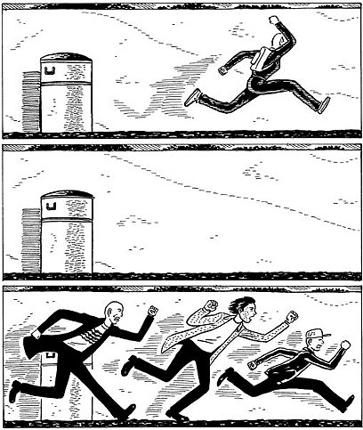
Not owning a single comic book in my entire life, I ended up writing my final essay about comics. The fact that the subject was and remained purely theoretical for me turned out to be surprisingly liberating. I never drew or read graphic novels, neither Western nor manga, I had no formed preconception of how it works, I was just intrigued by the media itself and the potential it has.
The approach towards studies of graphic design, and specifically its relationship with creation of visual content, that I faced later on in The Netherlands, has become the trigger to start implementing that fascination in my own work. 11
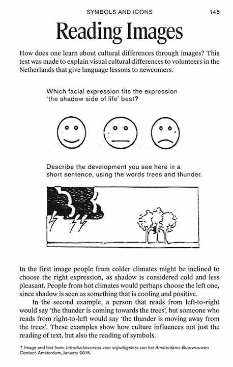
Pater, R. (2017). The politics of design. Amsterdam: BIS Publishers, p.145.
Later in this thesis I will get back to closer analysis of studying image, as education is one of the central points of interest for me here. However, I would like to round up this chapter simply saying, that an image I write it about is not one precious for its aesthetic value, neither it is one of authenticity. It is rather a principle, an idea of translating things onto (any type of) canvas, and the multitude of interpretations within different possible conditions. My focus is the most mundane and peripheral conventions of image-creation, the simpler - the closer to look at, as they all appear to play major (and different) roles in what we call our culture(s). I am writing this thesis to formulate my version of how graphic design(ers) can save the world.
Part 2:
Schema
In one of her articles, artist Hito Steyerl writes:
“The world of post-production : But if images start pouring across screens and invading subject and object matter, the major and quite overlooked consequence is that reality now widely consists of images; or rather, of things, constellations, and processes formerly evident as images. This means one cannot understand reality without understanding cinema, photography, 3D modeling, animation, or other forms of moving or still image. The world is imbued with the shrapnel of former images, as well as images edited, photoshopped, cobbled together from spam and scrap. Reality itself is postproduced and scripted, affect rendered as after-effect. Far from being opposites across an unbridgeable chasm, image and world are in many cases just versions of each other.14 They are not equivalents however, but deficient, excessive, and uneven in relation to each other. And the gap between them gives way to speculation and intense anxiety.”12
Steyerl, H. (2018). Too Much World: Is the Internet Dead? - Journal #49 November 2013 - e-flux. [online] E-flux.com. Available at: http://www.e-flux.com/journal/49/60004/too-much-world-is-the-internet-dead/ [Accessed 13 Aug. 2017].
In this “world of postproduction” translating ideas through images appears way before there is an actual picture to illustrate them. The center is more crucial than the margins; the left goes before the right but the right can occasionally carry more significance; the top lays upon the bottom while the bottom is more autonomous in its origin. There are principles that govern the composition of images in Western society. I was taught these rules at art school when I was a child: this was a language I was taught without being aware of it, all based on rights and wrongs and arranging things “how they should be”.
The ability of humans to put things in categories is what Kant, in his Critique of Pure Reason, calls a “schema”. “The schematicism by which our understanding deals with the phenomenal world ... is a skill so deeply hidden in the human soul that we shall hardly guess the secret trick that Nature here employs.”13 Kant’s concept of schema derives from his idea that a human mind has the unique capacity of categorizing and developing concepts of higher order. The process of not just storing, but also subconsciously grouping and arranging, maintaining and adding up information (memories) in our brains is what makes humans capable of forming cultures. Apart from being a neurological capacity with great potential, schematic reasoning can also be considered a language that is inherited and maintained.
Kant, I. (1905). Critique of pure reason. New York: P.F. Collier.
In my understanding, if there is such a thing as an evolution of schematic thinking, this evolution is closely tied to spatial metaphors, that, in turn, are connected to visual conceptualization, and specifically to the creation of images. The method of out- and underlining, crossing out and modeling abstract ideas. Even the term “schema” – skhēma (Greek) ‘form, figure’ – expresses this connection.
Nevertheless, let’s first talk about those already implemented images. It is most likely impossible to trace back the first line or a circle drawn with a purpose other than a literal depiction. How long did it take to get from trying to mirror an existing shape to appropriating its two dimensional version, and upgrading it to being a tool for exchanging all types of information? And is it even fair to claim that one came after the other?
In his essay “Projections of the Forest-Land: The Yanomami Image-Drawing”, journalist Laymert Garcia dos Santos describes a case of 1970’s, where the people of Yanomami group were for the first time ever introduced to, or rather given, paper and pencils.14 According to Western historians, Yanomami had never used drawing as a tool for any type of portrayal or shape-inspired imagery, though they did apply some other sorts of graphics – wickerwork, body painting – in form of marks and traces. Simply receiving the tool to create a two dimensional line drawing, the group got almost an immediate grip on how to navigate themselves through the blank canvas. The group improvised, which resulted in pretty readable impressions of human and animal figures or objects, that in their turn were carefully arranged into quite sophisticated interrelated compositions. This case can practically lead to the conclusion, that an ability to translate our ideas of reality on a flat canvas is something imprinted in humans so deep, that it only waits for a certain trigger to activate it. But in case it is a natural human impulse to narrate in a form of graphic imagery, how could it possibly happen, that throughout the time of Yanomami’s cultural existence (known to the Western world form mid 18th century), no images of the same nature have ever been registered? It is apparent that it was exactly the process of drawing a line, that led to such sudden revelation.
A line implies a continuous movement. It is carried out with an attitude a-priori different to the process of stamping, that is executed momentarily and signifies a different creative intention. A drawn line is a build-up, a direction, it, just as any language consisting of symbols, has no own significance, until there is one projected upon it by its author. An outlined shape is, then, a combination of premeditated, attentively directed movements, and the very act of drawing becomes a step-by-step progress.
Garcia dos Santos, L. (2013). Projections of the Forest-Land: The Yanomami Image-Drawing | Laymert Garcia dos Santos. [online] Laymert Garcia dos Santos. Available at: http://www.laymert.com.br/en/yanomami/ [Accessed 9 Aug. 2017].
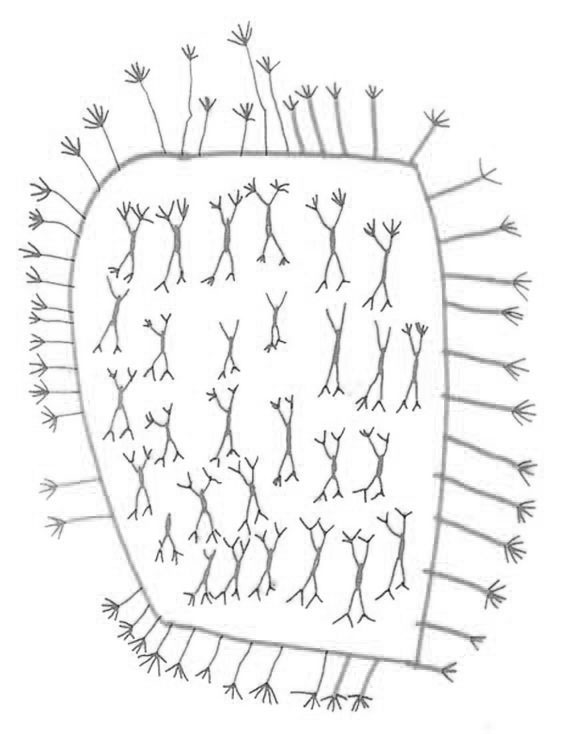
Part 3:
A line that rules the world.
Projected on a surface, a line is not a self-sufficient figure, neither it can be just a border between the parts that it divides, – it is those parts, it creates them, turning a blank canvas into a spatially organized stage. A single line has the power to orchestrate any further moves, it defines a course that the whole stage follows. There is nothing natural about its presence, – if there is a straight line on a canvas, somebody must’ve put it there.
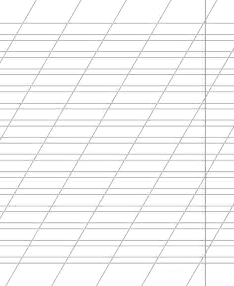Notepad grid that I had to use in school
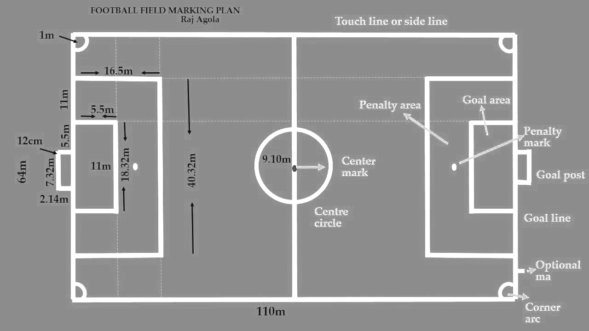
football field easy marking plan
So where does a straight line begin its history? When did it become a tool of storytelling? Whenever that happened, since then it has been promoted to being, probably, one of the most used man-made appliances. Not only it has become an essential instrument, but also a subject of aesthetic attraction.
Pliny, a Roman author, famous for his 37-volume Naturalis Historia, that comprised documentation of his own knowledge of the world, described one of the earliest tales that glorifies a hand-drawn line. The story revolves around the two great artists on Ancient Greece, Apelles and Protogenes.15 One day, Apelles came with a visit to the studio of Protegenes, but didn’t find him there. There was, however, a large blank canvas standing, ready to be used. Apelles drew the finest straight line on it and left the studio. When Protegenes came back, he knew immediately who the author was. He took another color and drew a line even straighter right on top of Apelles’s. When Apelles returned the next day, he drew the third line, and that one was so fine that the other two couldn’t compete with it. The artists decided then to keep the panel as it is, and later Pliny saw the painting at the palace of Augustus on the Palatine on an honorable display.
Penelope.uchicago.edu. (2012). Apelles and Protogenes. [online] Available at: http://penelope.uchicago.edu/~grout/encyclopaedia_romana/greece/hetairai/apelles.html [Accessed 10 Oct. 2017].
Another symbolic legend dates back to the 13th century, when Giotto, the famous Florentine painter, has proved his skill to the Pope by sending him a drawing of a perfect circle. The Pope was amazed when he heard that the circle was made by a single movement of Giotto’s hand, and distinguished it as the most impressive over other painters’ works.16
The Best Artists. (2007). Giotto’s Perfect Circle. [online] Available at: https://100swallows.wordpress.com/2007/09/14/giottos-o/ [Accessed 6 Oct. 2017].
Giotto Android App
Therefore, since the early ages one of the communicative roles that a single line’s been assigned is to reveal the glory of a straight, masterful movement of its author. Its purity is so appealing because it, itself, illustrates the process of its own creation.
Though, as I said above, aesthetic appeal is not my focus here. Since I am talking about image as an instrument of reasoning, a tool, consistent of symbolic expedients. Having said that, I would like to move on to the functional role of a line within a limited frame. Judging by the several examples, I will attempt to assess it as impartially as I possibly can.
One of the earliest instrumental applications of a straight line in Western craftsmanship is a representation of the horizon. Its delineation is highly functional, as it manifests self-presence within any physical space, establishing one’s own directions, signifying spatial awareness and strategic spatial thinking. The horizon itself, in the meantime, remains a figure of thought and speech, and its establishment is defined by this line that points out its existence. “…And with the loss of horizon also comes the departure of a stable paradigm of orientation, which has situated concepts of subject and object, of time and space, throughout modernity. In falling, the lines of the horizon shatter, twirl around, and superimpose.” 17
Steyerl, H. (2011). In Free Fall: A Thought Experiment on Vertical Perspective - Journal #24 April 2011 - e-flux. [online] E-flux.com. Available at: http://www.e-flux.com/journal/24/67860/in-free-fall-a-thought-experiment-on-vertical-perspective/ [Accessed 7 Sep. 2017].
Horizon is a fictional product of the first-person perspective. It defines the lefts and the rights, and unless there is a drawn line, fixed on a canvas, there is not a single pair of those lefts and rights, that would be the same for the eyes of two people. In fact, there is no such thing for a human eye as a truly static image. A concept of stable perspective is only possible within that other version of reality that exists on a flat canvas. A graphic line serves as an outset to hold on to, making all those other things around it countable and organizable.
"The sextant, a nautical instrument which determined the angle between a celestial object and the horizon."Source: http://images.e-flux-systems.com/15e3f9e3f65d767b0dba37bec627cad7.jpg,2000.
{kind=link}
Sextant
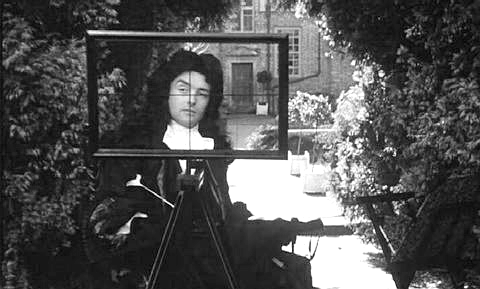
The Draughtsman's Contract, dir. by P. Greenaway. (1982)
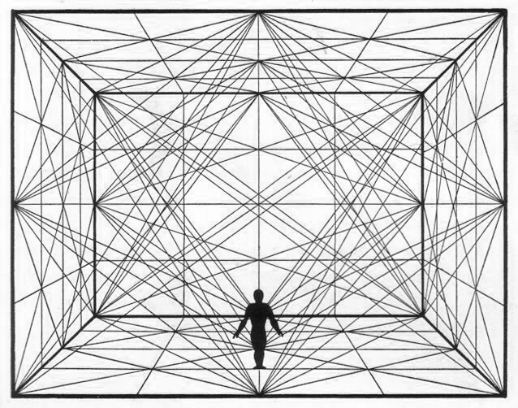
Oskar Schlemmer - Figure in space
The perpendicular vertical line is a representation of not only a different direction, - it is one of other magnitude, with other meanings assigned to it. If the horizon is a line of division, a frame for the visible reality, a vertical line is rather an idea of a movement, that crosses other surfaces. It is a direction meant to collide with the horizon, the course that is not as customary for human kind as horizontal. Therefore, vertical, transcendental movement has evolved to become an essential religious and philosophical concept, that signifies this relationship between the physical capacities of a human and higher powers of many kinds.
Vertical linearity in the graphic vocabulary of the modern West has become a convention of showing arrangement by a (hypothetical) status – the growing distance between its farthest point and the line of horizon is symbolically taken as a sign of achievement. One omnipresent figure that has grown out of proportion, and keeps imposing its format on the way we view social relations, is a (pointing up) pyramid. Apart from dictating the allegory of vertical growth as an ultimate virtue, it goes hand in hand with the metaphor of a stable horizon at its base. However, as Hito Steyerl argues in one of her texts: ”We cannot assume any stable ground on which to base metaphysical claims or foundational political myths.” 18
Steyerl, H. (2011). In Free Fall: A Thought Experiment on Vertical Perspective - Journal #24 April 2011 - e-flux. [online] E-flux.com. Available at: http://www.e-flux.com/journal/24/67860/in-free-fall-a-thought-experiment-on-vertical-perspective/ [Accessed 7 Sep. 2017].
Medieval Europe Feudal System
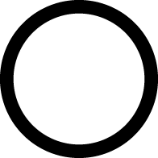
While the straight lines are connecting those points of importance, picked out by the observer, the circle defines the observer him- or herself. I started with the picture of horizon as a line with two ends, that are the ends of one’s viewport. The visible line, unlike its direction(s), has its limits. These directions complete the virtual horizontal circle ("ὁρίζων κύκλος" horizōn kyklos, "separating circle”). The circle lacks the beginning, so it lacks the end, but has a center, a point of observation, and the border, beyond which lays the unseen, hypothetical reality. The circle’s inside is an area, that belongs to its center: just like the image of the world, until it disappears over the horizon, belongs to the observer. If there is another circle somewhere, it has its own center, and is as complete in its independence.
In the discourse above, I am often referring to a line as “a movement”. However, a complete image of a line is only a graphic sign that there was, is, or will be a movement happening. Being such, it can not be an objective representation.
A good example would be a movement forward. It has no own unique trademark on a two-dimensional canvas - the most common Western sign in this case is an arrow pointing towards the top.19 This visual expression is so prevalent in most modern graphic languages, that breaking free from its total power would be a great challenge. It states the parallel between the symbolic connotations, assigned to up and forward directions. The onward movement falls under a different category than the horizontal left and right, it is given a purpose of reaching something, it goes towards its goal, crossing borders just as the vertical line. Same goes for the opposites - back- and downwards, and the emotional interpretation of this tandem tends to differ accordingly.
So, a line is born out of a continuous movement. As a tool of communication it can be compared to verbal or written monologue - happening in a form of an uninterrupted flow, led by the storyteller, turning and evolving in order to complete, round-up what is being said. This ability to keep up a proceeding narration, to arrange words and sentences accordingly, leads to one of the most crucial roles, that many cultures have assigned to a line - the idea of linear, time-dependent, chronological narrative.
However if we take a line as a universal metaphor for monologues of all kinds, we might want to rather assign it a multitude of interconnected lines - as it abounds with flashbacks and -forwards, interruptions, pauses and comments. One can as well suggest that a line can, indeed, be continuous, connecting point A all the way to point B, and that instead of breaking it goes on turning, curving and looping itself until it reaches its final destination. One way or another, the function of such schema is hardly to represent the content itself, but rather its arrangement within what we call a period of time. In fact, a line’s role is not to map the time out, as there is actually nothing to map, it simply creates it, sculpts its shape as an artifact that we can measure and use.
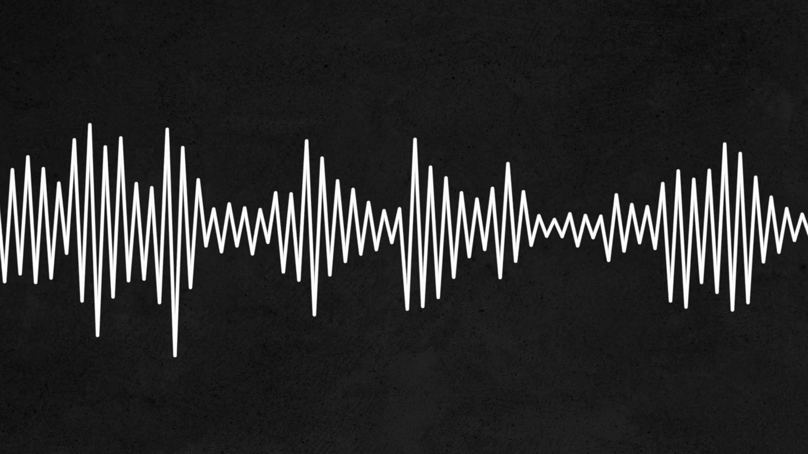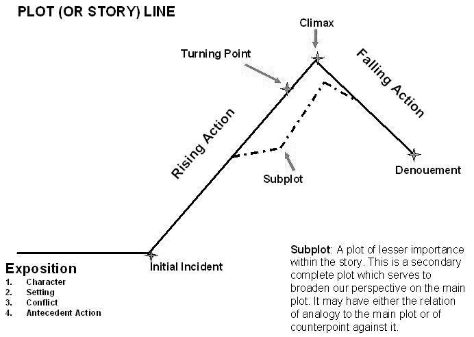
Part 4:
Time(line).
The idea of time in form of graphic fiction has, in fact, become the trigger for me to write about this subject.
Once I had a conversation which led to a sudden realization. A friend of mine imagines a period of one year to be a straight line. Weird. I’ve always pictured it to be a circle divided in quarters, with summer on top and winter at the bottom. What if the verbal, learnt, vocabulary that we use eventually leads us to visual associations that are so crucially unalike? And where does my circle come from anyway, did I make it up myself, did somebody else put it in my head when I wasn’t thinking? I have a vague, possibly fake, memory of an illustration in one of the primary schoolbooks that might have been the origin of my circle. If that is not just a product of my wild graphic imagination, then that specific picture, made by somebody who probably didn’t give it too much critical reflection, has been imprinted in my brain pretty damn well.
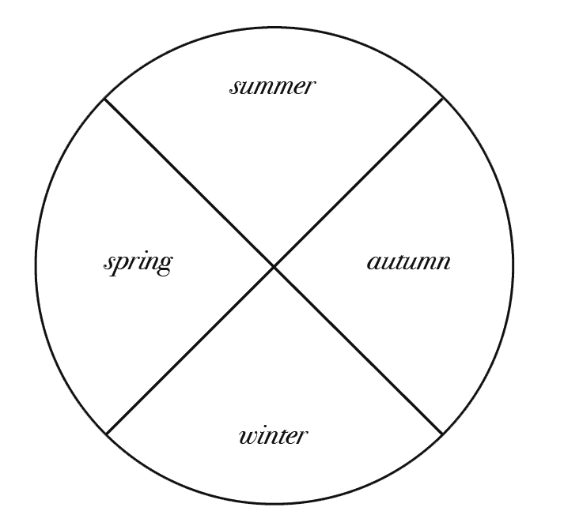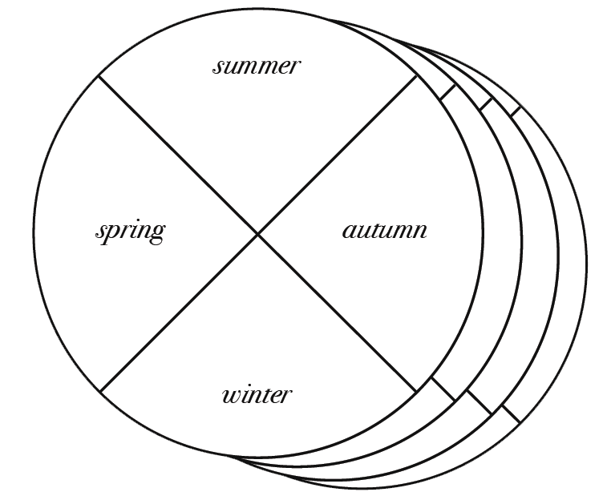
(This is how I picture a year.)
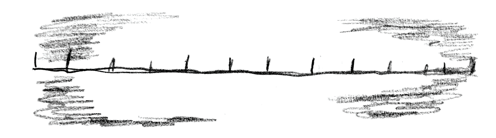(A drawing my friend made.)
These are some other images of "a year" I've collected from people:
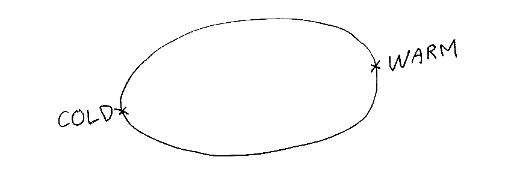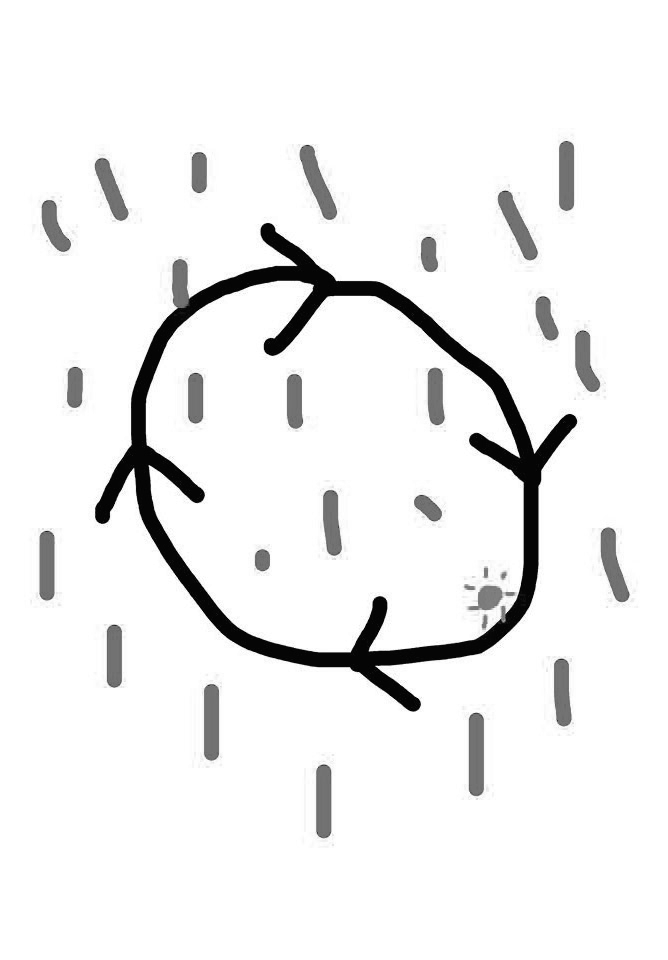
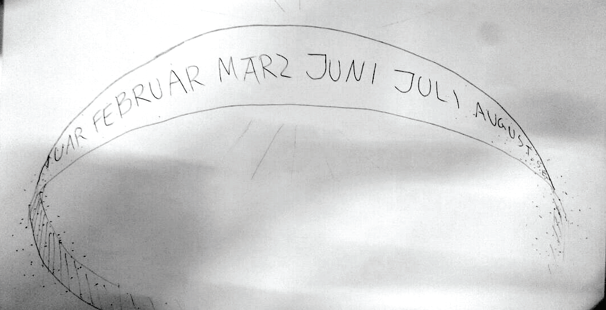
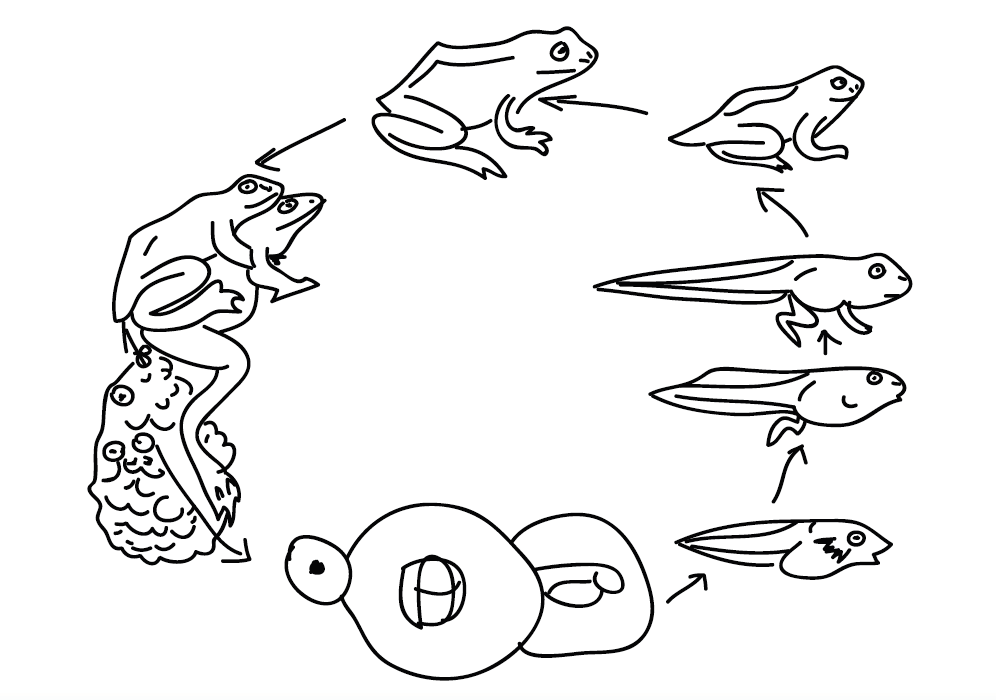
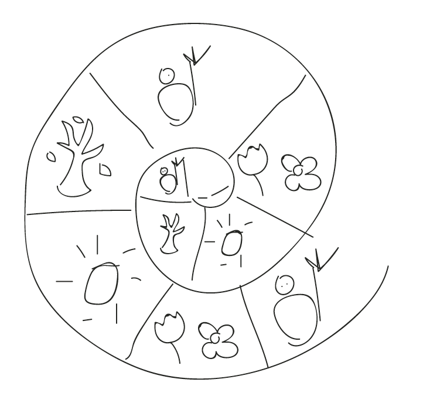
Time is, of course, only one of the many intangible concepts that, I suggest, are inseparable from their spatial-graphic embodiments, though it probably belongs to the most fundamental ones. Other graphic representations of social, political, economical and whatever else organization are made in regards to the idea of a time-flow one way or another. It can either be a graph of some chronological development, or simply a visual distribution of a content, that effects the order in which we register its parts. And, although widely appropriated, the understanding of what time is, in the diversity of its aspects, is not universal. Despite the worldwide system of time zones and other tricks of practical equalization, its common perception can still diverge in different parts of the world.
One of the widely known examples is the difference between Western, mechanical, and African emotional time consciousnesses. While Western society tends to arrange events according to a pre-determined calendar, African traditional track of time works the other way around, organizing numerical units according to real-life happenings. 20 The dissimilarity of perception has become a subject of many international and local disputes and cases of intercontinental miscommunication.21 It is logical to assume that the graphic representations of these concepts are, accordingly, different from one another.
“The difference between Western and African time consciousness is that a Westerner asks: “when did your grandfather die”. The answer is “15 years ago”. The African asks “When was 15 years ago”. And the answer is “When your grandfather died.”
Asb4.com. (2010). The Western versus the African Time Concept. [online] Available at: http://asb4.com/floor/teaching/timeafr/timeafri.html [Accessed 5 Sep. 2017].
http://allafrica.com/. (2010). Nigeria: Initiating Conversation On African Time. [online] Available at: http://allafrica.com/stories/201012290285.html [Accessed 4 Sep. 2017].
Moving on to concrete examples of conceptualizing time through image, I would like to look at several historically known graphic figures of different origin and standpoint.
An image of time following the pointing arrow and history as a line nowadays seems to be the most common cross-continental metaphor. This concept routes back to early Judeo-Christian cultures. 22Based on the idea of step-by-step growth and life with eventual higher purpose, the arrow of time leads the humanity towards its future and away from its past. This view on time implies that each of these steps is different from the previous, and the life path proceeds up until the judgement day as its highest point. How time works in the afterlife remains untold.
Sundaram, M. (2013). Linear and Cyclical Time: Time’s Arrow or Boomerang?. [online] The Endless Knot. Available at: https://endlessround.wordpress.com/2013/06/11/cyclical-and-linear-time/ [Accessed 11 Oct. 2017].
The Broad And The Narrow Way, Unknown artist, 1866
Since its earliest applications, the metaphor of a linear timeline has spread from religious to secular context, becoming the primary mindset of the modern West, shaping our track of history, the perception of the present and the outlook on the future. The expectation of afterlife has been replaced by the idea of progress, a new godless religion of a constant movement towards whatever is beyond the line of horizon, a religion of leaving the past behind.
The geocentric model as described by Dante Alighieri, Unknown artist, Renaissance to modern
The Western linear worldview is often seen in opposition to the cyclical one, which is more prevalent in some early Eastern civilizations. Egyptian, Mycenaean, Maya, Celtic, Buddhists’, Hindu, Taoists’ views are based on time’s connection with seasonal and other natural cycles. Circular timeline is repetition, as a rule implying multiple afterlives and constant reincarnation. One of the best known tales of circle’s adaptation is the story of Laotzi, a famous Chinese philosopher, who witnessed a never-ending chain of civil wars and times of overall crisis in China. Striving to find a reason for those dark times to take place, Laotzi has come up with the concept of Dao (The Way), which was based on following the cycles of nature that shift between prime and decay over and over again.23
Laofutze.wordpress.com. (2010). laotzi | Notes on Intercultural Communication. [online] Available at: https://laofutze.wordpress.com/tag/laotzi/ [Accessed 10 Jul. 2017].
Yama, the Lord of Death, holding the Wheel of Life, 19th century
In its traditional, Eastern, routes, the circle represents not only the present, but also the past and the future, unlike the cyclical clock of the contemporary West. The modern Western appropriation of the circular scheme works rather as a system of navigation and planning through the “current” time-units, while the overall map of historic development tends to stay linear. It points at the major difference in primary functions of the two. While the modern linear timeline is treated as a blank grid that can only acquire self-significance when filled with human events, the circle of time rather shows time that has its own power, – leading us through days and nights, periods of warmth and cold, blossom and rot. This distinction between “moving through time” and “time passing by” still tends to differ in Western and asian cultures. These notions are at large preserved linguistically, becoming a subject of great interest for researchers. Several studies have suggested that the time-moving metaphor (“time passes by”) is much stronger amongst native Mandarin speakers compared to the groups of English speakers who mostly lean towards the ego-moving metaphor.24
Boroditsky, L., Fuhrman, O. and McCormick, K. (2011). Do English and Mandarin speakers think about time differently?. Cognition, 118(1), pp.123-129.
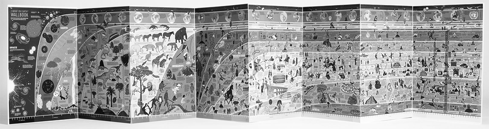
"History of the world" map in "What on Earth Wall Book", 2013
An elaborate combination of the two, the spiral-shaped line is originally associated with traditional philosophy of Judaism, and is explained in Torah.25 Sharing the Christian view that time is a linear progression, Judaism nevertheless refers to this movement as revolving around the center, but “growing” vertically at the same time, as the circle never closes.
HuffPost. (2012). Time Spirals And Other Insights Into The Jewish Calendar. [online] Available at: https://www.huffingtonpost.com/eitan-press/time-spirals-and-the-jewish-calendar_b_1513298.html [Accessed 29 Oct. 2017].
Even though it seems to logically put together the two prevalent time-philosophies, the metaphor of a spiral is not a frequent mention in modern history. Its appearance, somehow, seems to remain a sort of a creative alternative for the fundamental linear and circular schemes. It has as well become a popular anecdote of science fiction, explaining thus time travel possibility as “hopping from coil to coil26 ” instead of moving all the way along it.
Nahin, P. (2001). Time machines. New York: Springer, p.67.
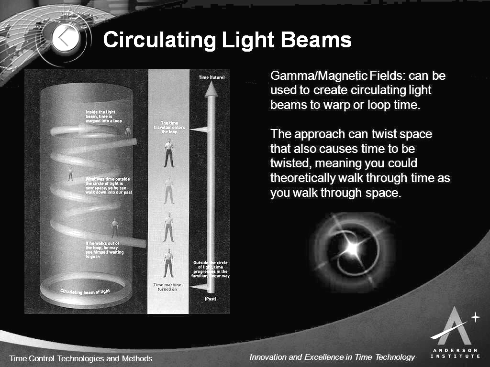
Source: http://www.andersoninstitute.com/circulating-light-beams.html
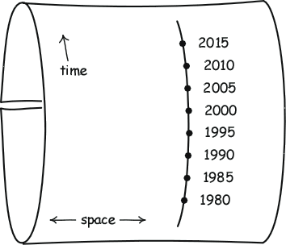Swiss journalist Lilly Abegg wrote one of the few known theoretical texts that refers to history as a spiral movement it in her book “The Mind of East Asia”. She writes: “History resembles a non-recurrent and irreversible process around which individual human beings, nations and cultures revolve rhythmically and spirally. Spiral motion resembles cyclic motion but is not identical with it, because its coils never return to the same point. The intervals between the individual coils may also be described as steps.”
Abegg, L. (1952). The mind of East Asia. London: Thames and Hudson, p.322.
27
One of the well known practical applications of spiral movement is the proposal of new curriculum structure in education, developed by the psychologist and cognitive researcher Jerome Bruner. His suggestion has become an outbreak in pedagogy and is built upon the phenomenon which Bruner defined and called “scaffolding”28. Scaffolding describes the way children build up new knowledge on top of what they already learned before. The metaphor of a spiral movement is, in this case, meant to organize a new schedule that compliments this ability and improves study process. I like this example, as it shows a very clear application of visual-schematic thinking where it actually serves for social progress.
Bruner, J. (1972). The process of education reconsidered. Washington, D.C.: Association for Supervision and Curriculum Development.
However, turning back to the most familiar linear timeline, that implies a beginning and an end, points A and B, might seem natural to ask where should we imagine these points to be located, or at least in which direction does the time generally aim. What I came across in my own history books was the common Western illustration29 - a line progressing from left to right, in the direction of reading. To be honest, I haven’t seen that many examples of history shown otherwise. This horizontality of chronological events has somehow become a Western trademark of keeping track of the past. Normally, it is not vertical, as we can perceive it as one towards a specific point of culmination and eventually a possible end. Neither it is a circle, that allows endless movement by the same trajectory. Horizontal timeline, as the horizon itself, might even be that circle in the end, but with its large part remaining unseen, outside of our viewport. Its parts beyond the canvas (far past and future) take the liberty to remain Schrödinger's cats, and contain no pre-defined or even expected developments.
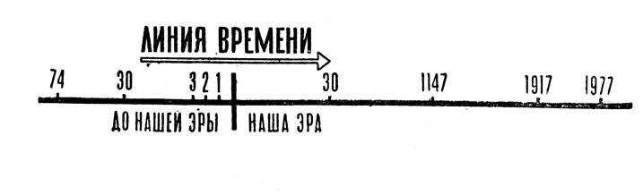
As I argued earlier, a horizontal metaphor is traditionally applied as a tool of self-manifestation, defining the relationship between the body and the space (or, in this case, an imaginary, spatially existing timeline) around it. Going back to the research of perceptual differences between Mandarin and English native speakers30 shows that Mandarin speakers are more likely to perceive time-flow as vertical, and, what is even more fascinating, going down from the top. Here I cannot help but suggest a connection between the frequent vertical metaphor of time among Mandarin speakers, and their tendency to perceive time as “passing by”, as a stream autonomous from human presence.
Boroditsky, L., Fuhrman, O. and McCormick, K. (2011). Do English and Mandarin speakers think about time differently?. Cognition, 118(1), pp.123-129.
The use of vertical timelines in Western graphic language is more likely for the fields like geology and zoology rather than for event arrangement in anthropological history. Verticality of historic progress frequently appears in visual jargon of specialized professional circles. Modern economy, for instance, is inseparable from its infographic representations, and vertical movement plays an essential role in it. A combination of horizontal and vertical arrows is a common diagrammatic expression. Horizontal layout is usually assigned to the neverchanging movement through time units, whereas the verticality – to variable, impermanent measurement of field-specific growth and decline.
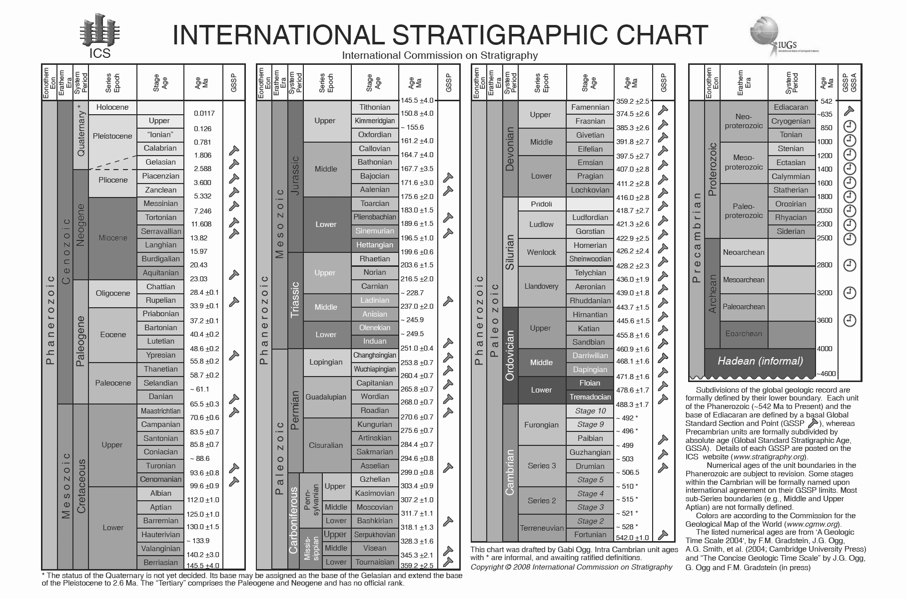Source: http://www.stratigraphy.org/index.php/ics-chart-timescale
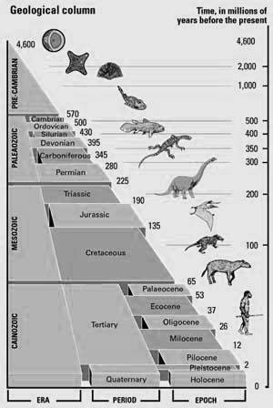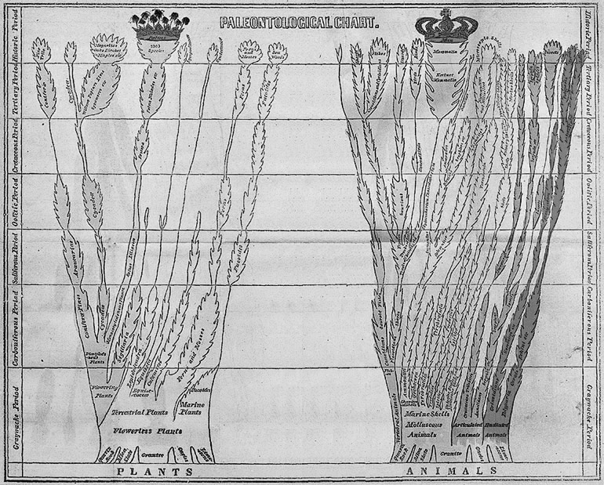
Fold-out paleontological chart of Edward Hitchcock in 'Elementary Geology' (1840)
everything else
The history of “seeing” time is thus a good showcase of how a spatial metaphor sums up, communicates, and in the end becomes a thinking method; of how a canvas, limited by its dimensions, serves a tool of cultural and cross-cultural appropriation. How a graphic shape, spatially existing within that canvas, turns into a formula, a course to follow. Once arranged, it, itself, grows into a tool of categorization, effecting visual, linguistic and other kinds of human languages. The diagrams of time are sculpting our history, forming ways of its preservation, changing our future and the idea of how to approach the present moment. Our ideas of time have become the grids for the new lines to come.
And, as I keep mentioning, time is not alone in this. We have surrounded ourselves with all those other intangible ideas that gain their power through obtaining a graphic body, structuring the material world in their turn. Social, political, economic classification, gender perception, the Internet as an entity, interpersonal dynamics, you name it. These are not necessarily concrete shapes on a piece of paper, – they can as well appear as a principle of composition, a place within an imaginary canvas. Image is the way we explain things, first and foremost to ourselves, as well as it is a way of preserving these new understandings and passing them on. Emergent from a product of individual perception, it can’t be universal, nor, as I said earlier, can it be entirely objective. We explain things the way we choose to explain them, and this is a great power in case we are aware of it.
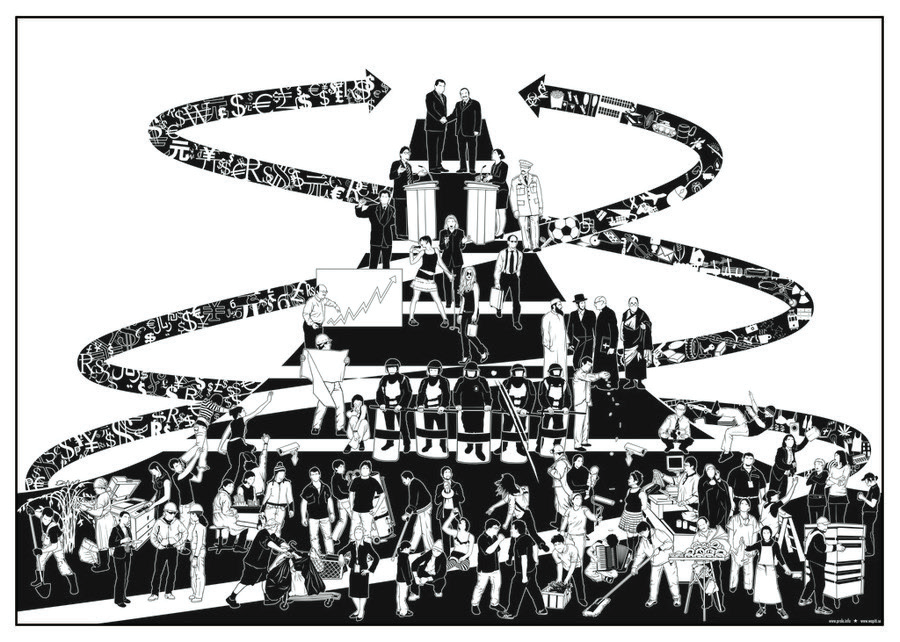Visualization of Philippine Economy (Post-war to post-Cold war)
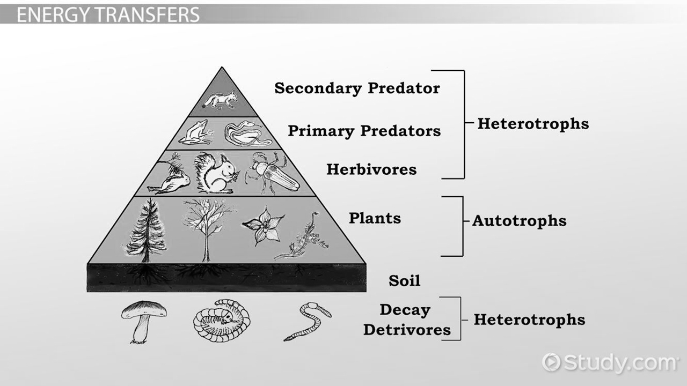A pyramid scheme for producers consumers and decomposers in nature
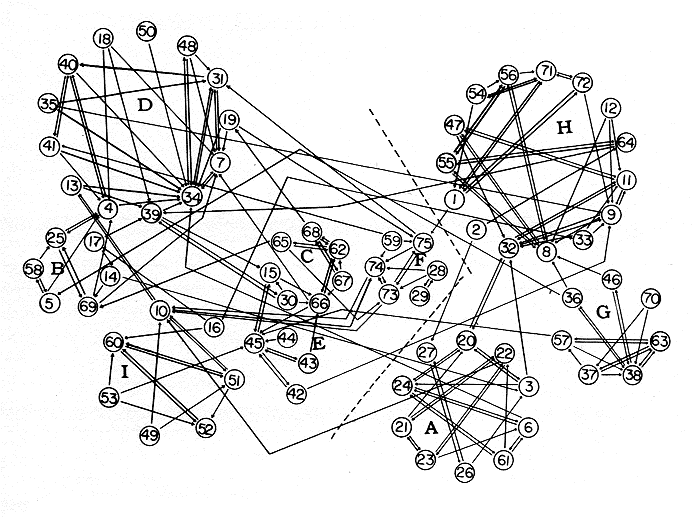Source: https://seeingcomplexity.wordpress.com/2011/02/01/a-short-visual-history-of-social-network-mapping/
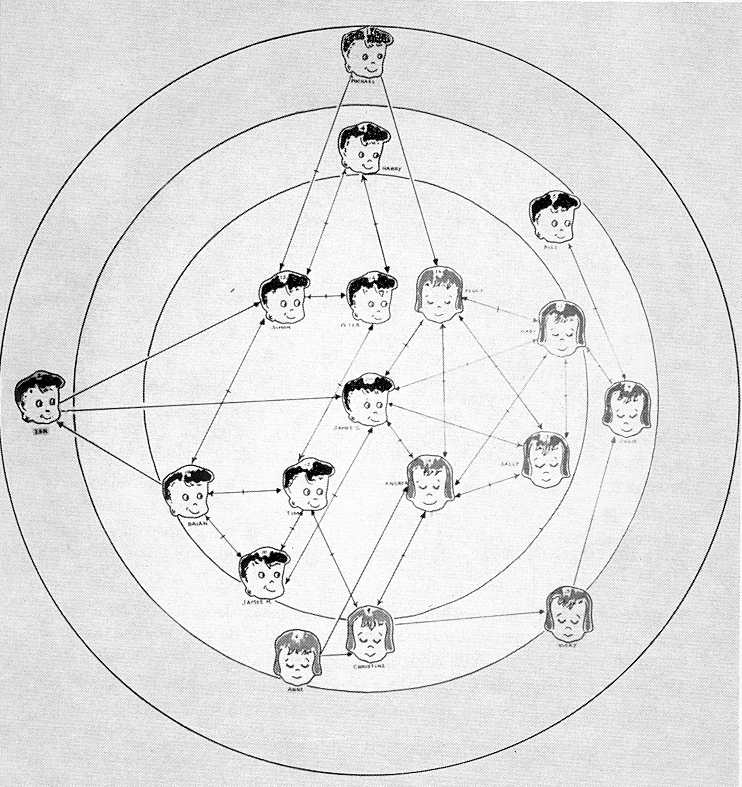Sociogram of a First Grade Class (from Northway, 1952)

Common linear representation of gender
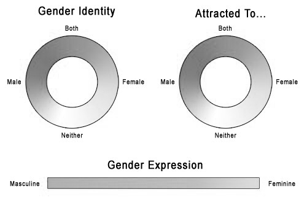A more sophisticated gender scheme, which, nevertheless, still ends up in a linear structure with two extremes.
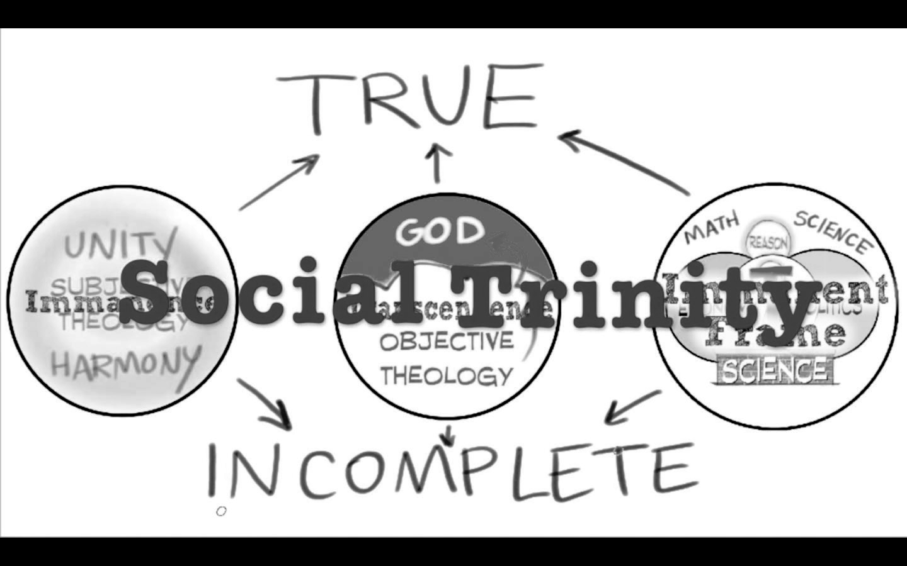Visual explanation of the concept of "Social Trinity". Source: https://www.youtube.com/watch?v=XpBqOsY1qZM
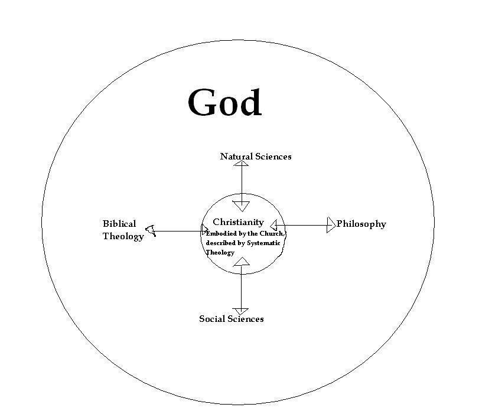Source: https://stumblingthroughtheology.wordpress.com/2010/09/20/theology-in-relation-to-other-disciplines/
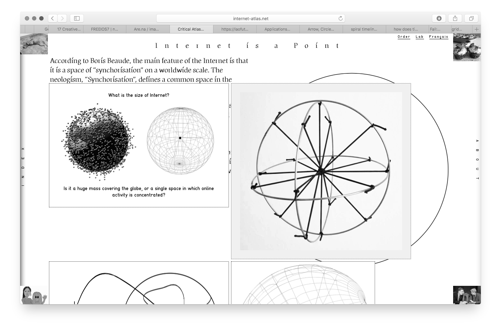Critical Atlas of The Internet: Spatial analysis as a tool for socio-political purposes, Louise Drulhe. Source: http://internet-atlas.net
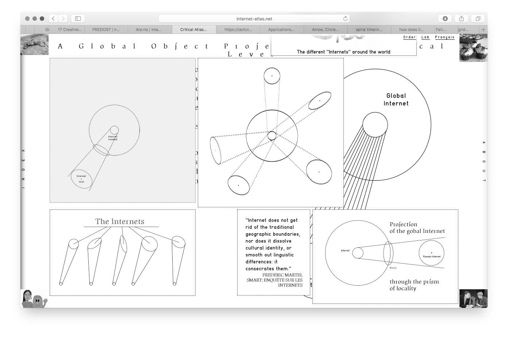See prev.
Part 5:
What’s next?
A short preface.
To the “regular” people:
Graphic designers are there for you. We are raising awareness all over the place, and we want to raise yours. We are going to make new images, we are going to present the old ones, whatever it takes to make you aware. Let’s not forget, that we have been taught how to make it accessible, as well. You, the non-designer, the one of other advancements, will spread the word and eventually do something with your brand-new knowledge. Right?
P.S.: Just leave the image to us, we know what we are doing.
I write this thesis because I believe, that we, altogether, can do better than this. That graphic design, in its newfound fluidity, can finally handle new routes of integration into the “real world”, and that the bubble could be ripe enough to burst. In this last chapter, I am going to talk about what happens after I raise your awareness and how graphic design can actually sort it all out.
Image as an interface.
What is the future of visual communication? We’ve established that image is a man-made tool of organization, but what can we do with that?
In the late 19th century the world has gained a notion, that I personally consider crucial for any further analysis and evolution of a graphic image. In its earliest applications, the term “inter-face” disregards the field of computing, and was coined for “a plane surface regarded as the common boundary of two bodies”31, rather describing chemical substances than hardware. A century later, the word has been re-coined and popularized as specifically referring to the relationship between the two, otherwise incompatible, logics, a “place of interaction between two systems”32. Within the context of digital culture, interface design has become a largely influential field, and caused a fascinating shift in attitude towards image-design: graphics as a bridge built for literal, two-sided interaction33, created for a user rather than a spectator. Integration of smartphones into daily routine has pushed interface design even further, – the tactile contact brought interaction to the new chapter of the romance between humans and images.
Www2.archivists.org. (n.d.). interface | Society of American Archivists. [online] Available at: https://www2.archivists.org/glossary/terms/i/interface [Accessed 11 Oct. 2017].
BARICHELLO, E. and CARVALHO, L. (2013). Understanding the digital social media from McLuhan’s idea of medium-ambience. Matrizes, [online] 7(1), p.235. Available at: http://www.journals.usp.br/matrizes/article/viewFile/56656/59684.
YouTube. (n.d.). Baby with Ipad VS Magazine. [online] Available at: https://www.youtube.com/watch?v=sa9HpWGDeMY [Accessed 5 Jan. 2018].
I would like to look at any canvas as an interface, as such “place of interaction” and appropriation between an individual and the rest of the world. I would like to think that, as any digital interface, it is to be in constant process of optimization and inner rearrangements, and should be as valued for its usability within the context of a unique purpose as for its aesthetic character. New tools of navigation are to be discovered, and the existing ones are to be re-considered. The presence of digital media is changing the analogue, as does the analogue effect the digital. If the line of a stable horizon is not yet erased from the picture, at least it is gaining its alternatives.
I’ve been raised on centered compositions that served an accompaniment to text, scornfully squeezed into schoolbooks, considered first an entertainment, a light dilution for the actually valuable content. My generation, as many before, grew up surrounded by such two-dimensional dioramas, unreachable, distant images meant to be seen from our faraway third-person perspective. As a result, my own passion for drawing found its way out through same sort of remote depictions, made with no other intention but to delight and entertain. I was mimicking what I saw, and back then nobody taught me to see otherwise.
But hey, by some lucky coincidence I chose image-making to be my profession, and, due to that, got the rare chance to be taught to reconsider quite a few things. If not the intense, demanding specialized education, I probably wouldn’t have moved from that stumbling point.
My parents still get frustrated from not seeing enough nice drawings on my website.
My current, soon to be over study has given me a chance to discover the diversified functionalities of available canvases. It has encouraged me to dismiss the necessity of familiar rules, that were previously imposed on me by my background. I found myself inside this idiosyncratic bubble of perceptual elite34, a subculture of people hacking the surrounding reality through analogue, digital and virtual images. It has provided me with an expanded visual vocabulary, the strive to widen it further and be curious for the newfound complexities. This has been a four years long process of reassessment for my visual thinking and argumentation.
"The Bachelor Graphic Design equips you to become a critical thinker and versatile practitioner who can develop outstanding concepts for visual communication. At the Royal Academy of Art, The Hague (KABK) we encourage students to ask questions about the social responsibilities of a contemporary designer, tackle challenges posed by the rapidly evolving new-media landscape, and seek answers to the problems of tomorrow."
KABK. (n.d.). Bachelor Graphic Design | KABK. [online] Available at: https://www.kabk.nl/en/programmes/bachelor/graphic-design.
Previously I dropped the word hacking, and would like to take it as a standpoint for this chapter. The general problem-solving attitude that the word hacking generally implies appears largely underrated in educational programs of various fields. Many disciplines have developed a negative attitude towards the term, treating it as rather cheating, than a process of creative thinking. This takes us back to the reality based on unquestioned, dominant rules. But if an image is the method of finding a common ground with the incompatible, unorganized real world, then let it be whatever works. Let it retrieve its potential as a multifunctional media, let it be unfamiliar and strange, allow yourself taking an effort to figure it out, to find the ways to interact with it purposefully.
This leads me back to the parallel with interfaces: a few months ago I came across one recently emerged expression of app-design slang that summed up something, that I felt was becoming more and more relevant for contemporary design scene, regardless the media35. The author of the article refers to Snapchat’s interface as a representative of the new breed: “shareable design”, putting it in opposition to the already well-known definition of “intuitive design”. The difference between the two, he argues, is that shareable design isn’t meant to be grasped from the first sight; unlike intuitive design36, it is no longer made for office clerks of the 90’s, who once had to figure out computer interface all by themselves, in worst case with the help of a guide-book. On the contrary, and that, he says, has become possible due to rapid integration of mobile devices, that imply a more human, physical contact, interfaces like Snapchat’s37 are designed to be a social tool. There is no more need to appear skeumorphic, mimicking the familiar older technologies for the sake of improved usability. Intuitive usage of shareable design is to be accomplished by figuring it out, by watching a person next to you doing that. The interaction with an image, in this case, is treated as a skill to acquire, – just as we learn walking and talking by observing other people, we learn how to browse through Snapchat and Tinder. “In addition to encouraging sharing, this kind of design has two other benefits. One, it makes features particularly memorable. If someone shows you how to use your iPhone to do a long press on a person’s name so a menu pops up allowing you to save their information to your contacts, that knowledge sticks with you.”38 This, I thought, is another term that is formulated within the digital framework, though can easily be taken as regarding design of all fields.
Elman, J. (2016). Intuitive Design vs. Shareable Design – Greylock Perspectives. [online] Greylock Perspectives. Available at: https://news.greylock.com/intuitive-design-vs-shareable-design-88ff6bb184bb [Accessed 29 Sep. 2017].
 The Xerox Star 8010 workstation introduced the first commercial GUI.https://commons.wikimedia.org/wiki/File:Xerox_Star_8010_workstation.jpg
The Xerox Star 8010 workstation introduced the first commercial GUI.https://commons.wikimedia.org/wiki/File:Xerox_Star_8010_workstation.jpg{kind=link}
Elman, J. (2016). Intuitive Design vs. Shareable Design – Greylock Perspectives. [online] Greylock Perspectives. Available at: https://news.greylock.com/intuitive-design-vs-shareable-design-88ff6bb184bb [Accessed 29 Sep. 2017].
Even here in the academy, where creative self-expression is praised, the paradigm of “design that your grandma understands” pops up here and there, one way or another, casting a shadow on everybody’s hunger for innovative thinking. We are prepared to face the real world after the graduation. That world, apparently, mostly consists of those hypothetical grandmas. The luckiest of us, I heard, manage to stick to the art cluster, and happily find their ways around the grandma reality for the rest of their careers.
I think it is time to allow ourselves some more confidence. Besides the ability to propagate and attract the momentary attention, graphic designers possess the understanding and appreciation of their own tools that can be shared. Image is everywhere, static and dynamic, it is being transformed and expanded from both sides, by both its author and the audience. If we accept and take notions like “shareable design” as a course to follow, if we attempt to overcome the professional pride and explain the potential of our inventory to other people, grandmas can as well turn our way one day.
I’ve been talking about my own background a lot, specifically focusing on the early years. I am convinced that elementary education is one of the most striking and pervasive instruments of societal development. Yes, we all eventually gain more knowledge and experience, yes, we all think it over again, but the basis is laid right there. It was established that young children are highly capable to perceive and learn new languages, to adapt to new rules and styles of expression. As the accessibility of information keeps growing, the world is becoming more multilingual in a diversity of ways. Visual language can’t remain an exception. Image vocabulary can be taught, its functionality can be demonstrated. We are already swallowing hundreds of images a day, static, dynamic and made-up verbally. This constant input requires filtering and orchestration, deeper understanding of implied hints, as well as the nature of the already imposed conventions of composition. That is exactly why visual literacy needs to be prioritized globally, promoted to the degree of precision that we’ve acquired in linguistic communication. Understanding of image as a unit-system can be achieved through both guided expansion of vocabulary, and through guided exercise of purposeful implementation. Effective use of image can be encouraged far beyond specialized practices. The variety of available media is already causing a shift from the totality of static linear imagery, opening new dimensions of perception. Image can and should be presented as a capable tool beyond the bounds of its aesthetic qualities, and graphic designers know that well.
Conclusion.
To myself and other image-makers:
Other people are not stupid. They can figure it out. And no, we are not going extinct once they learn new ways to use and read images. Spread of linguistic literacy doesn’t seem to harm professional writers, – on the contrary, it lays the fundament for deeper appreciation and greater attention towards what they do. We’ve already elevated our expertise from an exclusive handcraft to a comprehensive critical practice, we came to admit that even the simplest visible editing is content-production, and that graphic designers end up with big responsibility falling on their shoulders. We get devastated when misunderstood and undervalued, so we lock ourselves up in safe havens and produce “art for artists” and “design for designers”. We keep the inner subtleties of our profession to ourselves, and expect the rest of the world to grasp it at a glance. Maybe it is time to get things going. One of the most promising ways is teaming up educational institutions, facilitating a deeper learning of image as a complex, but structured and learnable language, introducing new image-based media as not just entertaining interlude, but as capable instrument of communication. Explaining it not only from theoretical and historical, but also practical perspective, showing children how image can become a working articulation utility. Such intervention shouldn’t be selective, based on any sort of artistic propensities or skills. The notion of muse and affective nature of image can be touched upon as a factor - but only one of the many. If we attempt to explain it to somebody else, then who knows, maybe we, ourselves, learn something along the way.
This won’t be easy, nor it will be fast, but I have all the faith in us.
With great enthusiasm,
Yours,
Asya Sukhorukova
This thesis was written during the 4th year of my Bachelor course (2017-2018) at The Royal Academy of Art (KABK).
Special thanks to:
Merel Boers (core thesis teacher)
Matthias Kreutzer (typography teacher)
Eric Schrijver (coding teacher)
Jakob Schlötter (for the help with all, from text to technical issues)
Text, design & development by A. Sukhorukova